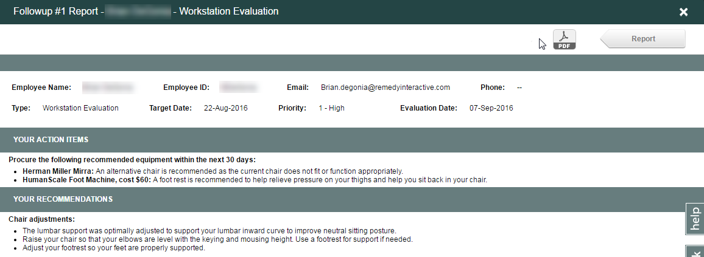
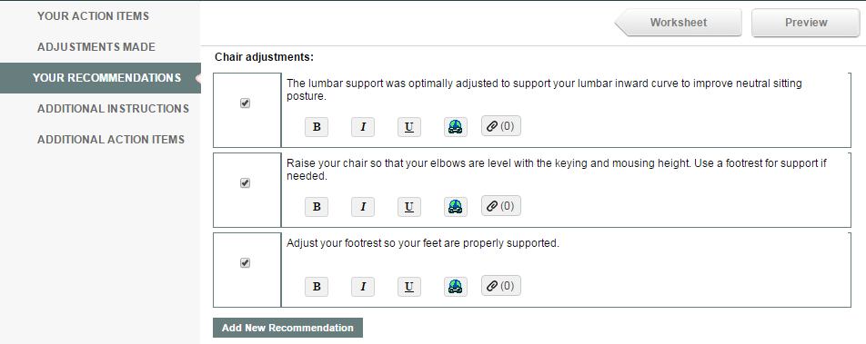
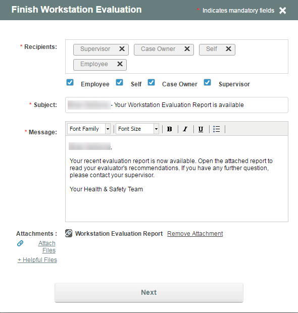
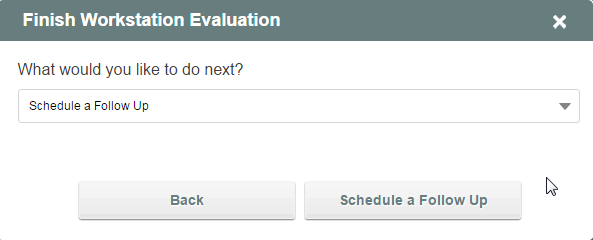
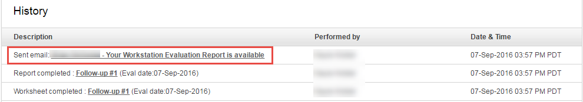

Click the Preview button to generate and view a copy of the final report.

Click on the Your Action Items and Your Recommendations to view the list of equipment related and behavioral recommendations respectively. Uncheck an item if you do not wish it to be included on the final report. These items will be struck through in the preview report and will not show on the completed report.

Click the X in the top right corner to close the worksheet and return to the Case Summary Page.
If you click the Finish button, you will be prompted to email the evaluation report to the employee.

To complete the evaluation cycle, you must decide what the next step is for the case. Choices include Finish and Close, thereby completing the case, or Schedule a Follow-up. A case that moves to the follow-up phase retains all information from the initial evaluation and can be viewed and updated based on observations during the follow-up. A complete history of each evaluation worksheet and report is available in the case history so that you can see the evaluators answers, notes and report for each phase. The follow-up can be reassigned and scheduled and follows the same cycle as the initial evaluation.

A hyperlink will appear in the History section of the Case Summary Page. To view, print or resend the full workstation evaluation report, click on the report hyperlink.
